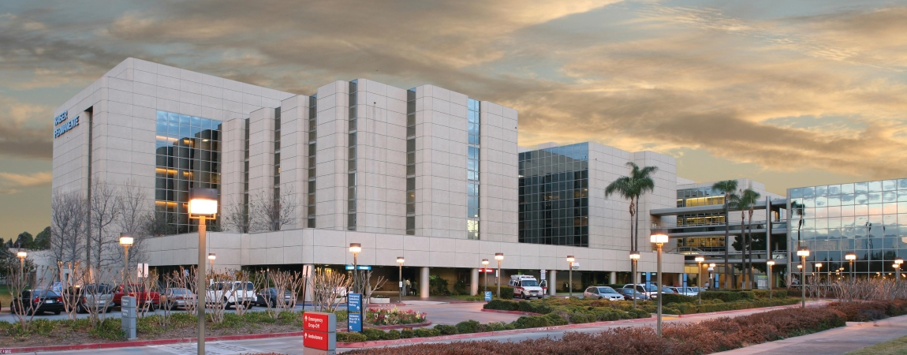
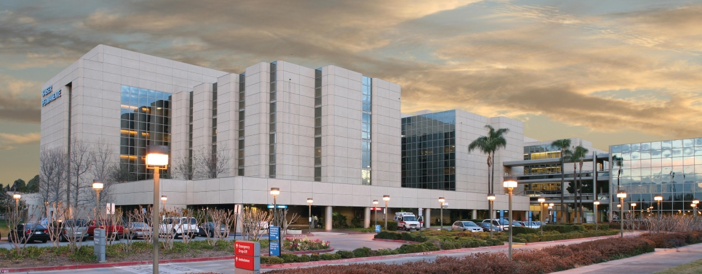

Ali Soto
I am an inspired student chasing their education in order to broaden their chances in the future. Currently I am a fourth year college student at the University of California: Riverside as a Biology major. I have enjoyed my past four years studying Biology. I also intern as a Health Scholar at Kaiser Permanente Riverside and help nurses and doctors on the hospital floors where I am needed. For as long as I have wanted to go to college, I have always wanted to go into the medical field as it felt the easiest and most sense for me to pursue. However, after a few years of working towards this goal I realize that it is not something I would like to do for a career. I have been inspired to see what other paths I could take with my degree and what other fields I can work towards.e
I am almost done and about to get my bachelors, however I wanted to take a few more years in school in order to get a minor in Computer Science. The reasoning for this would be to gain my prerequisites in order to be able to attain a masters in Computer Science. I have been taking many intro classes into Computer Science recently and have been enjoying every bit of it. I see myself diving deeper into the field with more advanced classes beginning this year and next year, and intend on expanding my knowledge with Computer Science a lot. In the end, I want to have two degrees in two different fields in order to give me a great amount of opportunities in the future when choosing my career. These two fields would be Biology and Computer Science, two very in demand fields when choosing careers.
The reason why I want to be able to have such a broad range of paths to pick from is because my family has not had the same opportunities I have been given. Both my parents risked a lot coming to the United States as immigrants in order to give their children a chance to have a better life. I intend on making their dream a reality, and I also intend on doing it in a way that I would feel happy doing so. I also do not want to be at a point where I am stuck because I cannot find a way to go forward. Having two degrees and the knowledge in fields such as Biology and Computer Science will hopefully make it easier on me later on in life. I am content pursuing this new path as it is something that I want, my family wants, and can also benefit biology and tech moving forward.
Experience
COPE Health Scholar
• Student Health Scholar
• Assists at Kaiser Permanente Riverside
• Experience on the hospital floor, over 300 hours
Cashier
• Responsible for checking out customers
• Restocking foods, condiments, beverages
Teaching Assistant
• Ran sessions to help students Organic Chemistry
• Reviewed and helped quiz students
• Created educational content to help promote student education
Education
University of California Riverside
Rancho Cucamonga High School
Portfolio




